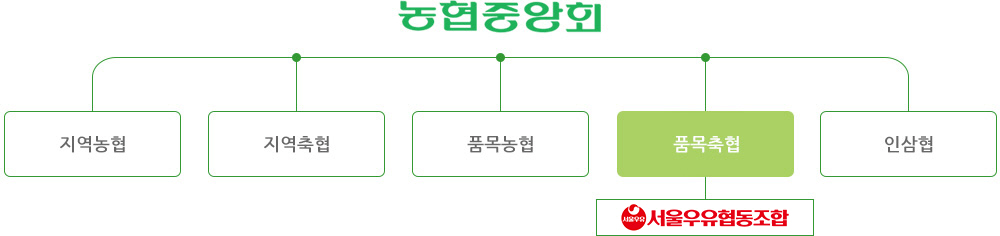
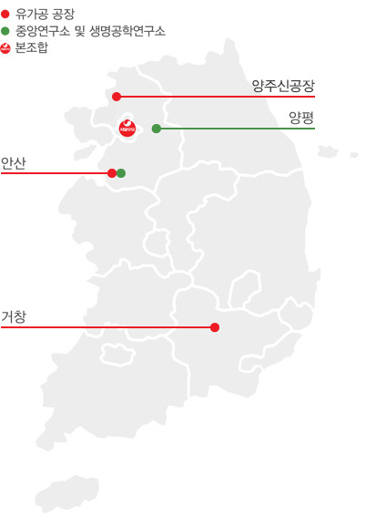

기업소개
우유로 세상을 건강하게!
초일류 유제품 전문기업 서울우유
서울우유 협동조합
농업협동조합법에서는 농업인의 자주적인 협동조직을 바탕으로 농업인의 경제·사회·문화적 지위를 향상시키고, 농업의 경쟁력 강화를 통하여 농업인의 삶의 질을 높이며, 국민경제의 균형 있는 발전에 이바지함을 위해 조직한 단체로 정의하고 있습니다. 서울우유협동조합(이하 서울우유)은 이 법에 의해 낙농업을 경영하는 조합원에게 필요한 기술·자금·자재 및 정보 등을 제공하고, 조합원이 생산한 축산물의 판로 확대 및 유통 원활화를 도모하여 조합원의 경제적·사회적·문화적 지위를 향상시키기 위해 노력하고 있습니다.

구역 현황
서울우유의 구역은 서울특별시, 인천광역시, 경기도, 강원도 철원군, 충청남도 천안시, 충청북도 진천군 및 음성군 일원으로 지역적 제한을 두고 있습니다.

사업장 현황
유가공 공장 3개(양주(신), 안산, 거창), 중앙연구소와 생명공학연구소, 영업지점 13개점, 신용지점 13개점, 가공품지점 2개점, 낙농지원센터 8개소를 운영하고 있습니다